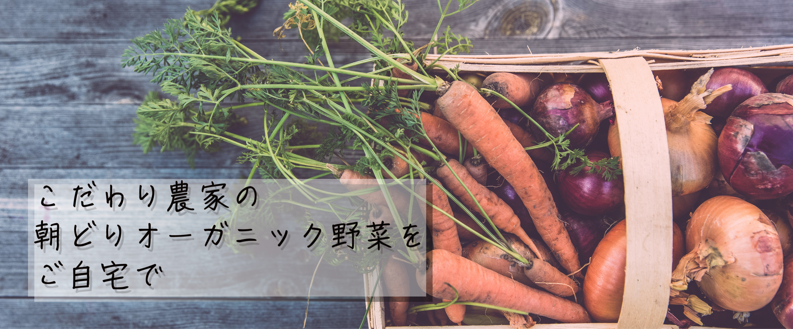
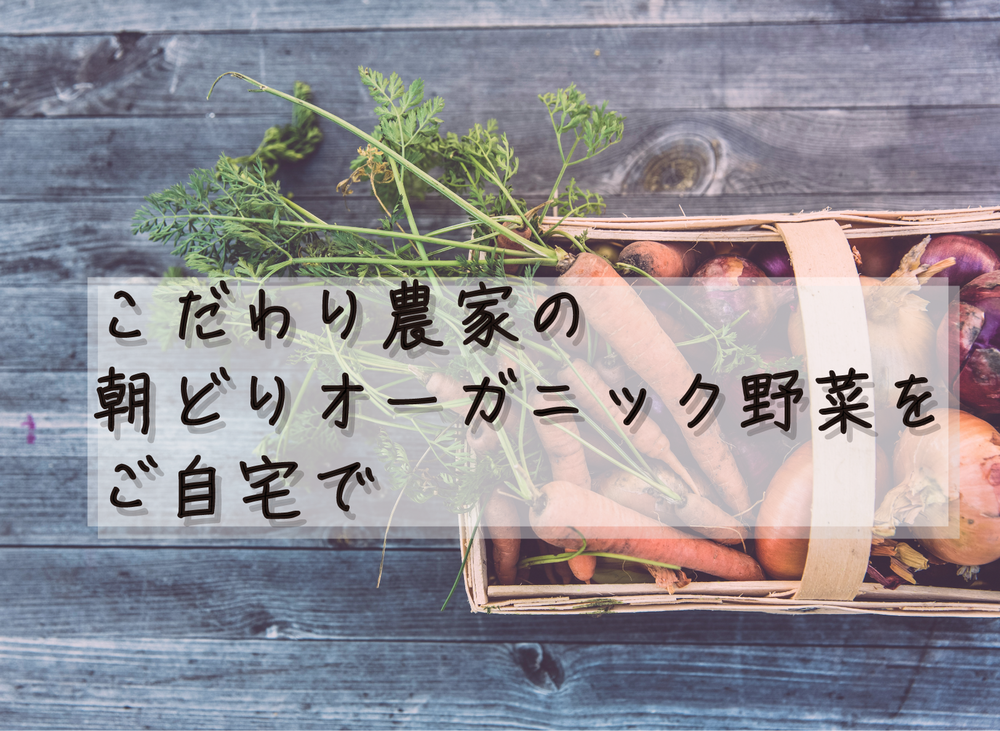
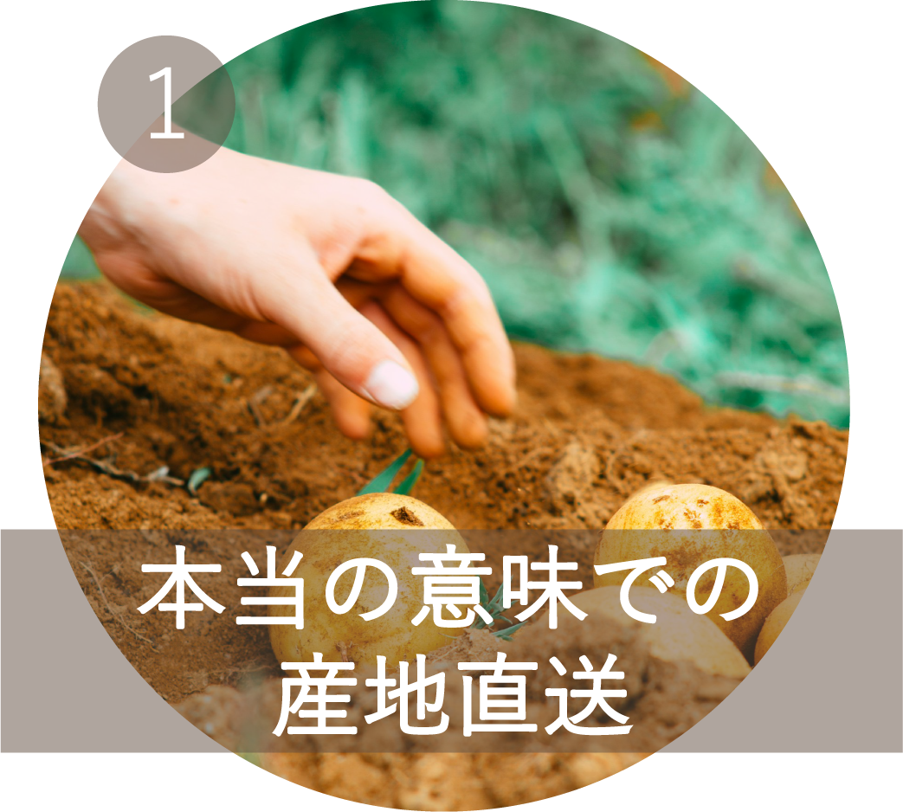
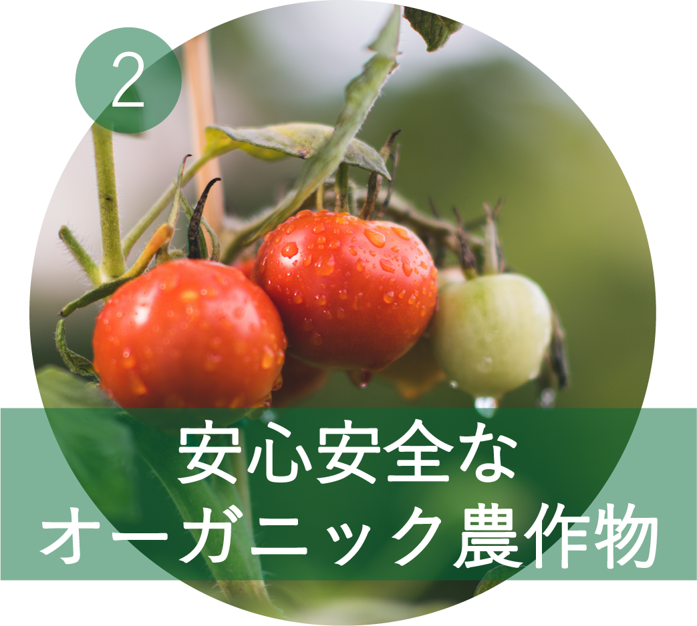
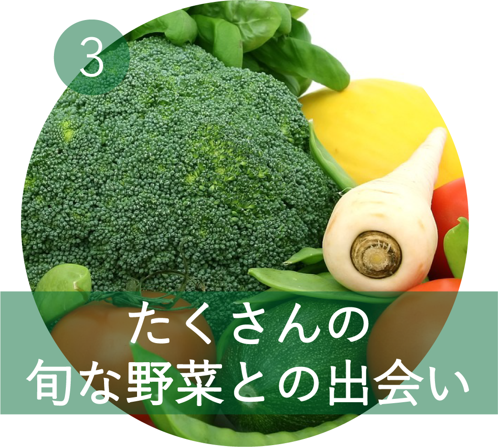
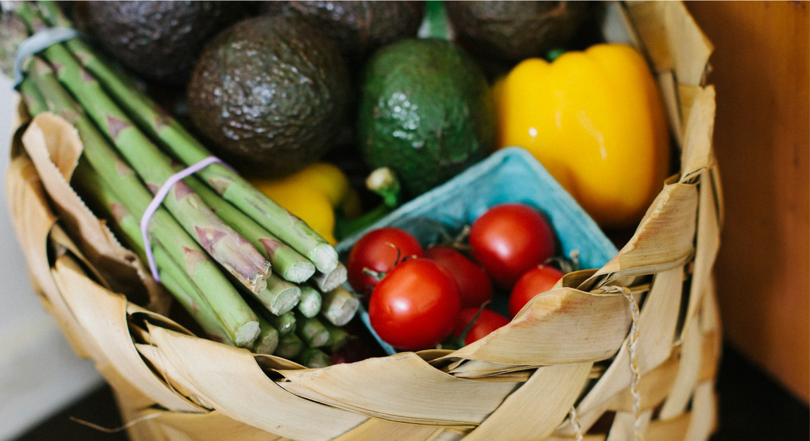
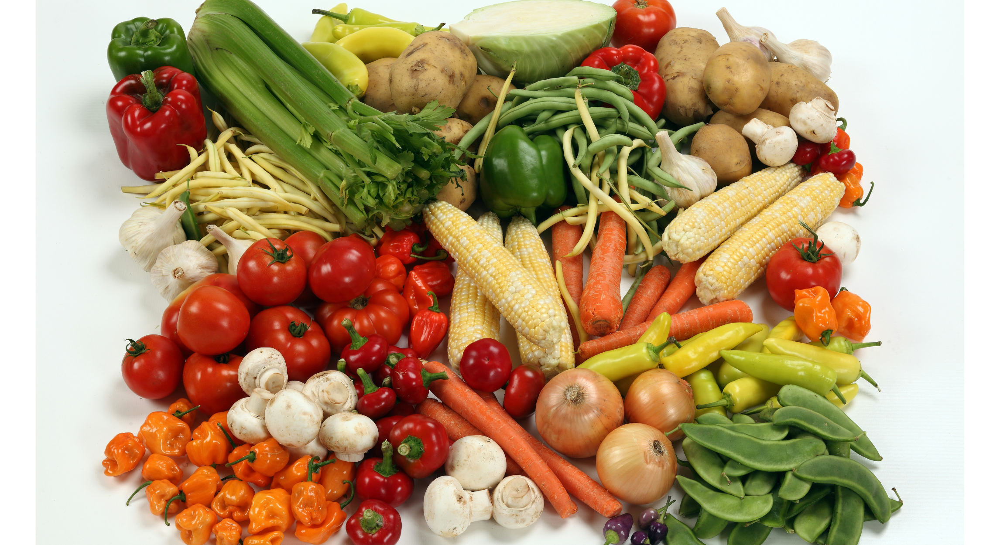
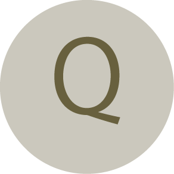

スグ食べとは？
「スグ食べ」は、厳選したオーガニック農家さんの穫れたて野菜を販売しています。
食材から選べるのはもちろん、生産者からも選べます。
生産方法や生産地、それぞれ異なるこだわりで、お気に入りの農家さんを見つけてください。
最短で24時間以内に届く新鮮なオーガニック野菜宅配サービスです。
スグ食べが選ばれる3つの理由

「なるべく収穫したばかりの状態で、野菜を味わって欲しい。」
スグ食べでは、既存の産地直送サービスのように箱詰め用の倉庫を介すことはありません。農家が収穫したその日に、お客様の元へ直送で野菜をお送りします。

出品している生産者は、有機栽培もしくは自然栽培の農家のみ。
全ての商品が無農薬・無化学肥料など、安全にこだわって生産された「オーガニック農作物」です。そのため、どの商品も安心してお買い求めいただけます。

年間数十種の野菜を作る生産者から、今が旬の多様な野菜が届きます。
スグ食べでは生産者ごとに商品が異なります。中には年間100種類もの多品種生産をしている生産者も。旬な野菜はもちろん、珍しい野菜とも出会えます。
自信があるから、是非食べてもらいたい
１回限り！少量お試しセット
【ベジックス】
旬＊お試し野菜セット(6品目)

生産者：千葉県 松戸市 ベジックス
【くちぶえ農園】
旬＊お試し野菜セット(6品目)

生産者：長野県 飯田市 くちぶえ農園
各￥1,280（税込 / 送料別）
よくある質問

産地直送のサービスってよく見るけど何が違うの？
鮮度が抜群に違います。
通常の産直サービスは、一度倉庫などに野菜を集め、そこで箱詰め作業をして配送しています。
この仕組みでは、お客様が商品を受け取る時には収穫してから3,4日が経過しています。
スグ食べでは、箱詰め作業を農家さんにお願いすることにより、最短で収穫当日に商品を受け取ることができます。
どんな農家さんが登録してるの？
農薬不使用にこだわる、オーガニック農家さんのみが登録しています。
有機栽培や自然栽培などの環境に配慮した農法で生産するには、通常以上に費用も手間もかかります。
そんな中でも、「安心な野菜を食べて欲しい」という強い思いを持って、こだわって野菜を作っている農家さんがいます。
そういった、厳選されたオーガニック農家さんのみが登録しているため、安心してお買い物を楽しんでいただけます。